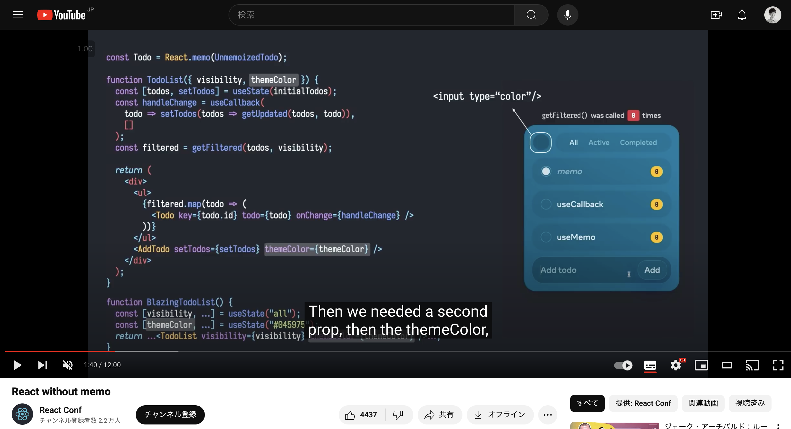
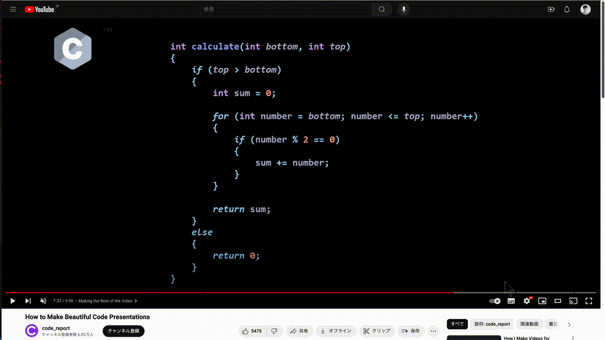

ところで
エンジニアなら
スライドはgit管理！！
Slide as Code！！！
ですよね？
そんなあなたに reveal.js のご紹介
reveal.js is an open source HTML presentation framework.
この資料は reveal.js で作りました
この資料は reveal.js で作りました
ではなく
これを見てすげーーーって思ったから
 React Conf 2021 のXuan Huang (黄玄)-sanのプレゼンHTML/CSS/JSをフル活用した表現ができる
Sansan 株式会社
こういうのも作れる！
It's fun!!
- マークアップをちまちまやるのが楽しかった！
- エンジニアなので楽しい
- 気軽に画像を入れたり、図形をDnDできないのは大変
reveal.jsのちょっと微妙なところ
- gulpでビルドしてる（古いね）
- 型がない
- でも、React用のプラグイン拡張もあるからそれなら良い感じかも。
映えた？
- 凝ったらきれいにはできるかも？
- インタラクティブなスライドだったり、映えるシーンはいくらでも
- 文字のmorphトランジションはやりたかったけどできず

reveal.jsの他には？
-
https://marp.app/
- markdown→HTML, PDF, Powerpointに
-
https://sli.dev/
- vueベースでmarkdownを用いる
Thanks!
https://github.com/takapiro99/attractive-presentation-slides-2024